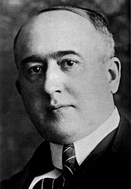

Milutin Milankovic (Dalj, 28. maj 1879. - Beograd, 12. decembar 1958.) bio je srpski matematicar, astronom, klimatolog, geofizicar, gradevinski inženjer, doktor tehnickih nauka i popularizator nauke.
Procitajte više o njegovom angažovanju i radu , kao i o teorijama i doprinosu nauci.